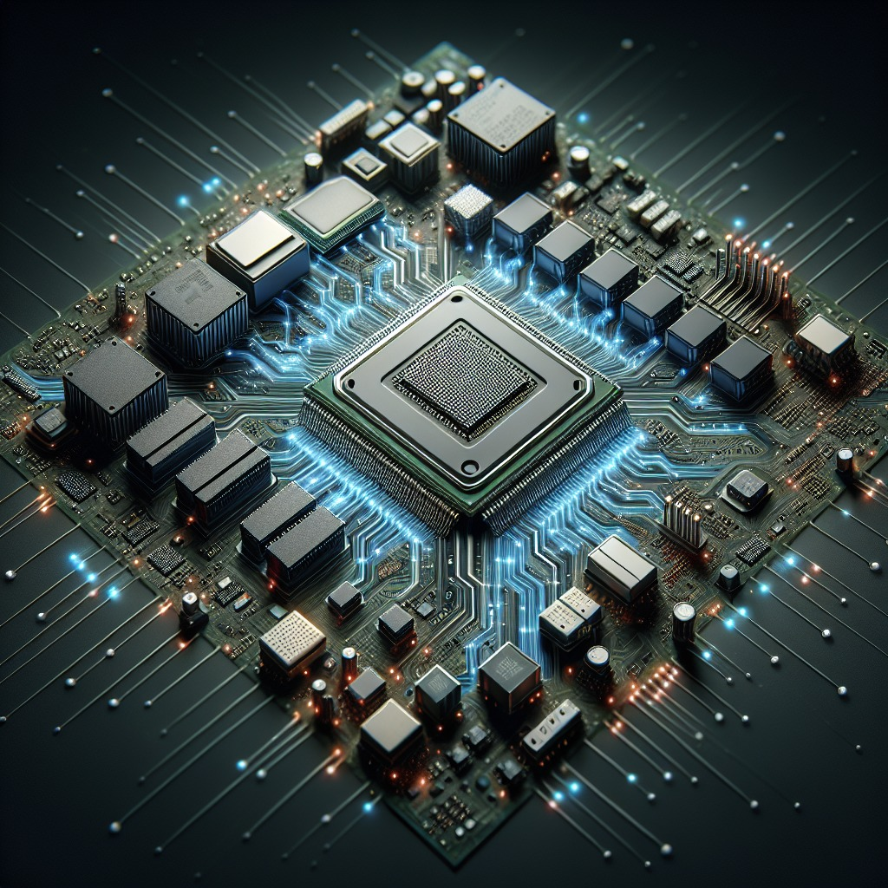
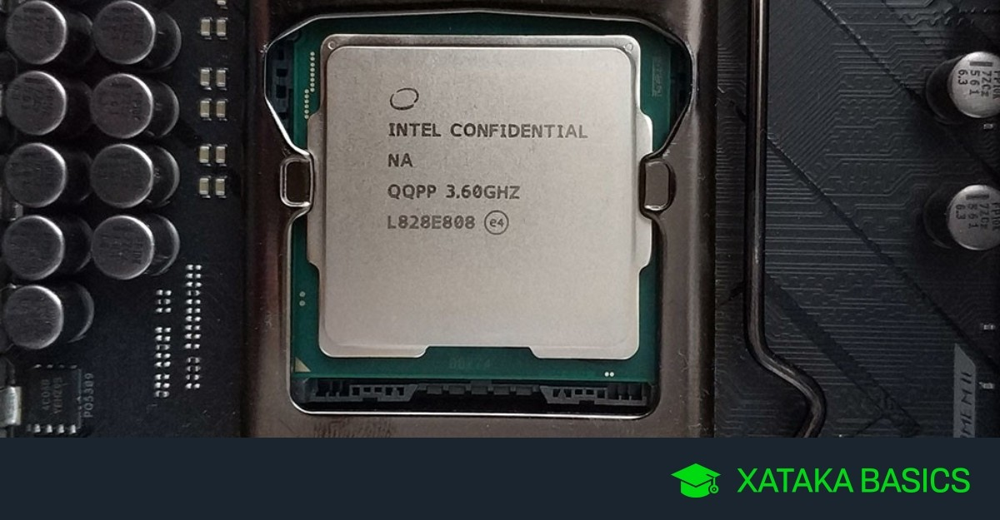
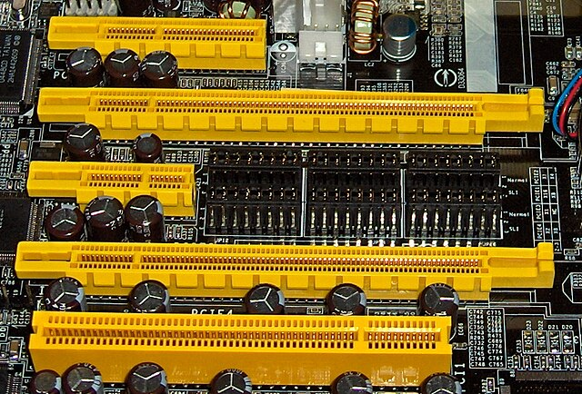
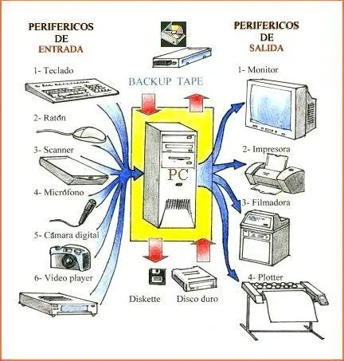
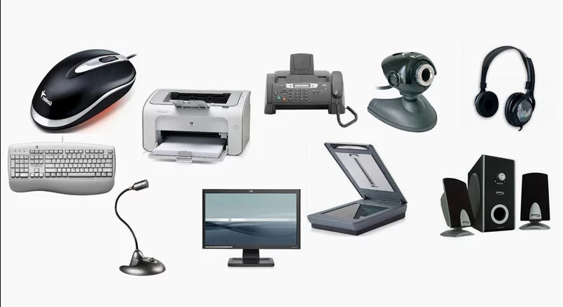
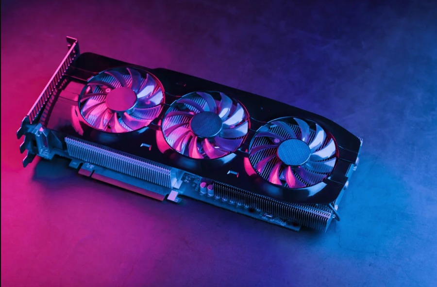
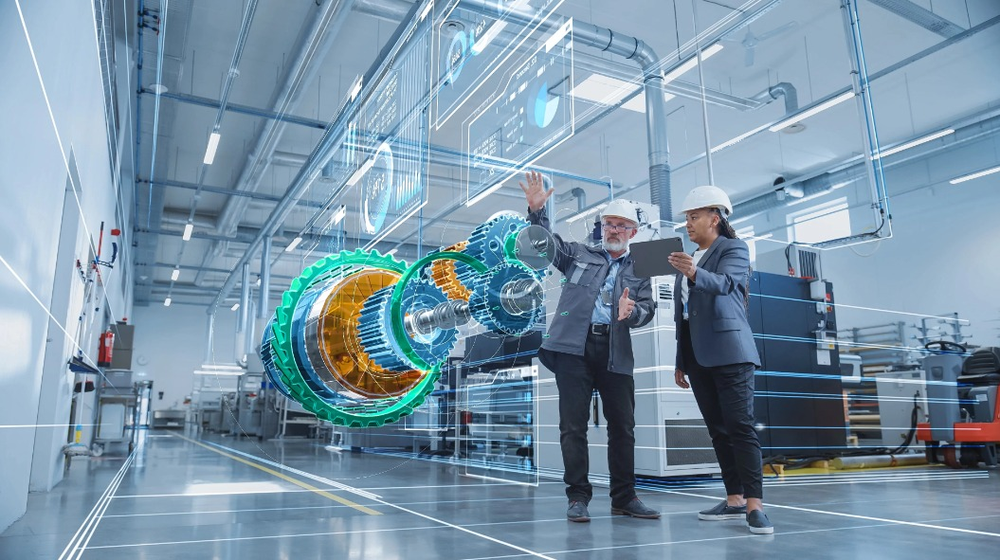

3.1 Chip set
El chip set no es una pieza del ordenador como tal, si no un componente de la placa madre. Se definen como un conjunto de chips que ayudan al ordenador a la interconexión y el funcionamiento adecuado de los componentes en la placa madre, la gestión de la memoria, la administración de puertos de E/S (entrada- salida), y la coordinación entre el procesador y otros componentes.
3.1.1 Unidad central del procesamiento
La Unidad Central de Procesamiento (CPU), también conocida simplemente como procesador, es el componente esencial en una computadora. Podríamos considerarla como el corazón del sistema, ya que contiene la potencia de cálculo necesaria para llevar a cabo todas las tareas diarias del ordenador.
Definición
La CPU es la abreviatura de Central Processing Unit (Unidad Central de Procesamiento en español). Es el componente de hardware central y la base fundamental de la computadora. Sin ella, un ordenador no puede funcionar en absoluto.
Funciones
La CPU es responsable de todos los cálculos necesarios para que el ordenador funcione. Los comandos de máquina, que se representan en código binario (secuencias de ceros y unos), son procesados por la CPU. En otras palabras, interpreta y ejecuta las instrucciones del software y el hardware del ordenador.
Tipos de CPU
Procesadores de un solo núcleo (Single Core): Tienen un único núcleo de procesador y pueden realizar una tarea a la vez. Aunque son menos comunes hoy en día, fueron utilizados en el pasado.
Procesadores de varios núcleos (Multi Core): Estos procesadores tienen varios núcleos (como Dual o Quad Core). Pueden realizar múltiples tareas en paralelo, lo que mejora la eficiencia y velocidad.
Fabricantes
Dos fabricantes conocidos son Intel y AMD, que dominan prácticamente el mercado de procesadores.
En resumen, la CPU es el cerebro de la computadora, encargado de procesar todas las instrucciones y datos provenientes del software y otros componentes del sistema.
3.1.2 Controlador del bus
Un controlador de bus es un controlador de función que también enumera los elementos secundarios. Durante la enumeración, un controlador de bus identifica los dispositivos en su bus y crea objetos de dispositivo para ellos. El bus de control es el que regula en qué dirección debe ir la información de escritura y lectura.
El bus de control permite a la CPU determinar si el sistema está enviando o recibiendo datos y cuándo. El bus posee un controlador maestro único responsable por dirigir todas las operaciones del sistema e iniciar cualquier transferencia entre dos dispositivos conectados al mismo bus.
En otras palabras, el bus de control es el que administra el uso y acceso a la línea de datos y de direcciones. Estas líneas son compartidas por todos los componentes, por lo tanto debe haber mecanismos que las controlen para evitar colisiones de información. Por lo tanto las señales de control transmiten tanto órdenes como información de temporización entre los módulos.
3.1.3 Puertas de entrada-salida
También se conocen como puertos o interfaces. Son todos los puntos por los cuales se pueden conectar periféricos o aparatos que sirvan para llevar a cabo una buena interacción humano-computadora.
3.1.4 Controlador de interrupciones
El controlador de interrupciones es un módulo que tiene por función gestionar las interrupciones de entrada/salida para el procesador. Esto ahorra diseñar lógica y añadir patitas al procesador. También proporciona flexibilidad porque permite idealmente, gestionar un número ilimitado señales de interrupción (favoreciendo la expansión del sistema de entrada/salida). El controlador recibe el conjunto de señales de interrupción procedentes de los dispositivos, toma la decisión de cuál es la más prioritaria, y envía una única señal al procesador. La respuesta del procesador es transmitida al dispositivo y el propio controlador se encarga de depositar en el bus el vector de la interrupción.
Ciclo de reconocimiento de interrupción
- Tras la activación de una línea IR, el controlador activa la salida INTR señalándole a la CPU la existencia de una interrupción activada.
- Al recibir la señal, el procesador da un pulso en su salida INTA indicando que comienza un ciclo de reconocimiento de interrupción.
- Al recibir el controlador el pulso por su entrada INTA comienza a arbitrar las interrupciones recibidas y selecciona la más prioritaria.
- Se emite un segundo pulso por la línea INTA del procesador (o controlador de bus) que utiliza el controlador para depositar en el bus el vector correspondiente a la interrupción de mayor prioridad.
- El procesador obtiene la dirección de la rutina de interrupción a partir de este dato y salta a ella. Almacena el registro de flags y la dirección de retorno, deshabilita las interrupciones y comienza a ejecutar la rutina.
3.1.5 Controlador de acceso directo a memoria
Un controlador de acceso directo a memoria (DMA, por sus siglas en inglés: Direct Memory Access) es un dispositivo hardware que permite que ciertos componentes de un sistema informático, como una tarjeta de red, una tarjeta gráfica o un disco duro, transfieran datos directamente hacia y desde la memoria del sistema sin la intervención de la unidad central de procesamiento (CPU). La función principal de un controlador DMA es mejorar el rendimiento del sistema al permitir que los dispositivos periféricos realicen transferencias de datos de manera independiente, liberando a la CPU para realizar otras tareas mientras se lleva a cabo la transferencia de datos.
3.1.6 Circuitos de temporización
El circuito electrónico que más se utiliza tanto en la industria como en circuitería comercial, es el circuito temporizador o de retardo, dentro de la categoría de temporizadores, cabe destacar el más económico y también menos preciso consistente en una resistencia y un condensador, a partir de aquí se puede contar con un sinfín de opciones. Cuando necesitamos un temporizador, lo primero que debemos considerar es la necesidad de precisión en el tiempo, base muy importante para determinar los elementos que vamos a utilizar en su concepción y diseño.
Un temporizador básicamente consiste en un elemento que se activa o desactiva después de un tiempo preestablecido. De esta manera podemos determinar el parámetro relacionado con el tiempo que ha de transcurrir para que el circuito susceptible de temporizarse, se detenga o empiece a funcionar o simplemente cierre un contacto o lo abra. Se encuentra en la placa base de la PC y que es capaz de mantener una cuenta de tiempo basada en el reloj de la computadora. Puede usarse para calcular el intervalo entre dos mediciones de tiempo o para mantener actualizadas la hora del día y la fecha si se deja la PC conectada y encendida.

3.1.7 Circuitos de control
Es una red secuencial que acepta un código que define la operación que se va a ejecutar y luego prosigue a través de una secuencia de estados, generando una correspondiente secuencia de señales de control.
Estas señales de control incluyen el control de lectura-escritura y señales de dirección de memoria válida en el bus de control del sistema. Otras señales generadas por el controlador se conectan a la ALU y a los registros internos del procesador para regular el flujo de información en el procesador y desde los buses de dirección y de datos del sistema.
3.1.8 Controladores de video
La tarjeta de video, (también llamada controlador de video), es un componente electrónico requerido para generar una señal de video que se manda a una pantalla de video por medio de un cable. La tarjeta de video se encuentra normalmente en la placa de sistema de la computadora o en una placa de expansión. La tarjeta gráfica reúne toda la información que debe visualizarse en pantalla y actúa como interfaz entre el procesador y el monitor; la información es enviada a éste por la placa luego de haberla recibido a través del sistema de buses.
3.2 Aplicaciones
En informática, un periférico de entrada/salida o E/S (en inglés: input/output o I/O) es aquel tipo de dispositivo periférico de un computador capaz de interactuar con los elementos externos a ese sistema de forma bidireccional, es decir, que permite tanto que sea ingresada información desde un sistema externo, como emitir información a partir de ese sistema. Los Dispositivos Periféricos de entrada son todos aquellos dispositivos que permiten introducir datos o información en una computadora para que esta los procese u ordene.
Funciones
Un periférico de E/S es el que se utiliza para ingresar (E) datos a la computadora, y luego de ser procesados por la unidad central de procesamiento (CPU), genera la salida (S) de información. Su función es leer o grabar, permanente o virtualmente, todo aquello que se haga con la computadora, para que pueda ser utilizado por los usuarios u otros sistemas.
Tipos
Dispositivos o periféricos de comunicación entre computadoras, tales como módems y tarjetas de red, por lo general sirven para entrada y salida. También, los dispositivos de almacenamiento de datos, como los discos rígidos, la unidad de estado sólido, las memorias flash, las disqueteras, entre otros, se pueden considerar periféricos de entrada/salida.
3.2.1 Entrada/Salida
Conforme la tecnología avanza, más datos se van generando, por lo que es necesario contar con un almacenamiento eficiente para poder guardar toda esa información y acceder a ellos. El almacenamiento de datos ha cambiado mucho, desde los sistemas de disco, que muy probablemente se sigan utilizando, pero de una forma más digital: hoy se encuentran conectados a una red y son definidos por un software.
El almacenamiento de datos tiene un proceso a través del uso de la tecnología, ésta se aplica para organizar, distribuir y archivar información con los bytes y los bits que son parte de los sistemas de los que la gente depende día con día, llega a ser tan importante en todos los servicios: desde una simple aplicación, contenido multimedia, direcciones, contactos, hasta protocolos de red y todo lo que tiene que ver con el mundo digital.
Memoria contra almacenamiento
Generalmente, los usuarios de computadoras tienden a confundir los términos “memoria” y “almacenamiento” pues los emplean de manera indistinta, utilizándolos para referirse a la RAM (o memoria principal) o al disco duro. Desde el punto de vista técnico, ambos términos son prácticamente iguales pues tanto la RAM como el disco duro se utilizan para almacenar información, claro está, de formas distintas y para propósitos diferentes. Mientras la memoria se refiere a la ubicación de los datos a corto plazo, el almacenamiento es el componente de su computadora que le permite almacenar y acceder a datos a largo plazo. Usualmente, el almacenamiento se da en forma de una unidad de estado sólido o un disco duro. El almacenamiento le permite acceder y almacenar sus aplicaciones, sistema operativo y archivos por un tiempo indefinido.
Almacenamiento en sistemas informáticos
Un dispositivo de almacenamiento es un hardware que se utiliza principalmente para almacenar datos. Cada computadora de escritorio, computadora portátil, tablet y smartphone tendrán algún tipo de dispositivo de almacenamiento en su interior y también puedes obtener unidades de almacenamiento externo independientes que se pueden utilizar en varios dispositivos.
- Unidades de discos duros (HDD).
- Discos de estado sólido (SSD).
3.2.2 Almacenamiento
Una fuente de alimentación es un componente esencial de cualquier dispositivo electrónico ya que es ella quien se encarga de darle vida. En cualquier equipo, por pequeño que sea, siempre hay una fuente de alimentación, aunque no la veamos. En los ordenadores de sobremesa, la fuente de alimentación se encuentra generalmente en la parte inferior de la torre (en cajas antiguas se encuentra en la superior), y muchas cajas de ordenador optan por incorporar un compartimento para separarla del resto y ya de paso ocultar todos los cables salientes de ella.
Una fuente de alimentación sirve para dar energía a un dispositivo electrónico. Siguiendo con el tema de los ordenadores de sobremesa, la fuente de alimentación da energía a la placa base, CPU, tarjetas gráficas, HDDs, SSDs, ventiladores, lectores de CDs. En resumen, alimenta a todo lo que necesite energía, para ello hace uso de diferentes tipos de cables. Las fuentes de alimentación proporcionan energía a los SSD y HDD mediante conectores SATA de energía, y a los ventiladores mediante conectores molex de 3 o 4 pines o bien mediante la propia placa base (que es alimentada con el conector de 24 pines ATX). De esta manera, todos los componentes reciben energía de la fuente de alimentación.
Además, las fuentes protegen a todos los componentes mediante una gran cantidad de sistemas dedicados a ello. Existen fuentes de alimentación que no requieren de ventilación, por lo que su refrigeración es completamente pasiva. Estos modelos suelen ser fuentes de medio-bajo voltaje con una alta eficiencia, para que el calor generado sea menor y se pueda llevar a cabo su disipación sin usar ni un solo ventilador acoplado a la fuente, con los que existan en la caja serán más que suficiente.
3.2.3 Fuentes de alimentación
Se conoce como fuente de alimentación, o power supply en inglés, al dispositivo que se utiliza para convertir la corriente de la red eléctrica en una forma de energía adecuada para los componentes de un dispositivo o sistema electrónico. Generalmente, la fuente de alimentación transforma la corriente alterna de la red eléctrica en corriente continua.
Características
Una fuente de alimentación puede ser interna o externa, dependiendo de si está integrada en el dispositivo al que alimenta o no. Su capacidad varía según los requerimientos del dispositivo al que alimenta, y se mide en vatios.
Las fuentes de alimentación, además, pueden incluir otros elementos que sirven para proteger la vida útil de los dispositivos, como:
- Reguladores de tensión.
- Protectores contra cortocircuitos.
- Protectores de sobretemperatura.
3.3 Ambientes de servicio
El negocio de proveer servicios de datos es mucho más complejo que la forma en la que se dan los tradicionales servicios, que con frecuencia se terminan involucrando o necesitando la colaboración de terceras empresas.
- Desarrollo de nuevos mercados y productos
- Adquisición y administración de clientes
- Proveer y desarrollar servicios para la red
- Administración del negocio
3.3.1 Negocios digitales
Definitivamente, la tecnología en general ha sido la causa principal y la acción más directa para la transformación del trabajo de las organizaciones en la posguerra del siglo XX. Tanto los bienes de capital «duros» (computadores, teléfonos, videos, facsímiles, grabadoras, etc.), como los programas y sistemas de información y comunicación en general, han incrementado enormemente la productividad y eficiencia de las organizaciones.
Elementos más comunes
Utilizar tecnologías existentes para reducir costes, recopilar datos y proporcionar una mejor experiencia al cliente. Las empresas digitales se centran en las ventajas competitivas que la tecnología les ofrece, ya sea reduciendo gastos o proporcionando nuevo valor a sus clientes.
Adoptar el concepto de transformación digital y los cambios culturales que requiere. La implementación y gestión de servicios digitales puede requerir una reestructuración organizacional, especialmente a medida que se crean nuevos roles y se da mayor atribución a las decisiones estratégicas de IT.
Explorar nuevos modelos de negocio que pongan la experiencia del cliente en el centro de la estrategia digital. Los modelos empresariales que se alinean con un enfoque hacia la satisfacción del cliente se centrarán en los servicios digitales, ya que lo digital es la experiencia cada vez más preferida por los usuarios.
3.3.2 Industria digital
La industrialización de los servicios de tecnología de información va a redefinir el mercado en términos de como las organizaciones evalúan, compran y seleccionan los servicios y como los vendedores desarrollan y establecen precios de los servicios. Para lograr esta estandarización, se requiere un enfoque hacia las soluciones genéricas y esto debe ser responsabilidad de los proveedores, que deben de desarrollar, operar y administrar el resultado de estos genéricos de TI. Aunque los servicios de TI están en proceso de madurez, la madurez de la industria se ha incrementado en aspectos evidentes, como la forma en que los servicios son implementados y administrados.
Industria 4.0
La Industria 4.0 es la realización de la transformación digital del campo, que brinda toma de decisiones en tiempo real, productividad mejorada, flexibilidad y agilidad. La Industria 4.0 está revolucionando la forma en que las empresas fabrican, mejoran y distribuyen sus productos. Los fabricantes están integrando nuevas tecnologías, que incluyen Internet de las cosas (IoT), computación y análisis en la nube, IA y machine learning en sus instalaciones de producción y en todas sus operaciones.
Integración de TI y TO
La arquitectura de red de la fábrica inteligente depende de la interconectividad. Los datos en tiempo real recopilados de sensores, dispositivos y máquinas en la planta de producción pueden ser consumidos y utilizados de inmediato por otros activos de la fábrica, así como compartidos entre otros componentes en el lote de software empresarial, incluida la planificación de recursos empresariales (ERP) y otro software de gestión comercial.
Análisis de datos para una óptima toma de decisiones
La arquitectura de red de la fábrica inteligente depende de la interconectividad. Los datos en tiempo real recopilados de sensores, dispositivos y máquinas en la planta de producción pueden ser consumidos y utilizados de inmediato por otros activos de la fábrica, así como compartidos entre otros componentes en el lote de software empresarial, incluida la planificación de recursos empresariales (ERP) y otro software de gestión comercial.
3.3.3 Comercio electrónico
El desarrollo de estas tecnologías y de las telecomunicaciones ha hecho que los intercambios de datos crezcan a niveles extraordinarios, simplificándose cada vez más y creando nuevas formas de comercio, y en este marco se desarrolla el Comercio Electrónico. Se considera “Comercio Electrónico” al conjunto de aquellas transacciones comerciales y financieras realizadas a través del procesamiento y la transmisión de información, incluyendo texto, sonido e imagen.
El comercio electrónico o ecommerce es el comercio de bienes y servicios en Internet. Es el bullicioso centro de la ciudad o la tienda física traducida en ceros y unos en la superautopista de Internet.
Un sitio web de comercio electrónico es tu escaparate digital en Internet. Facilita la transacción entre el comprador y vendedor. Es el espacio virtual donde se muestran los productos y los clientes virtuales hacen selecciones. Tu sitio web actúa como estantes de productos, personal de ventas y caja registradora de tu canal comercial en Internet.
Volver a la página principal